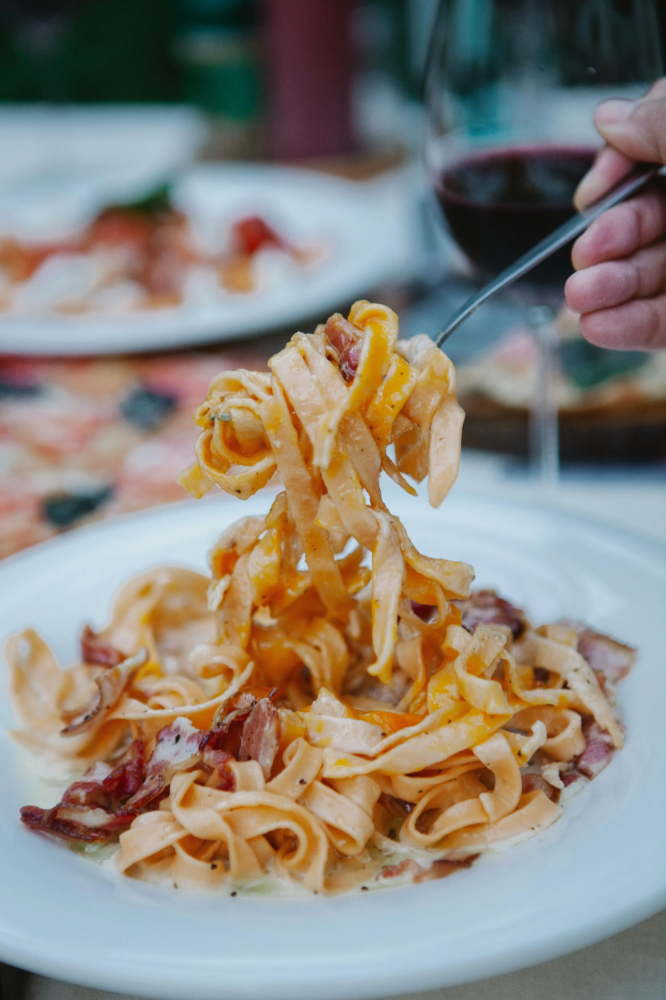
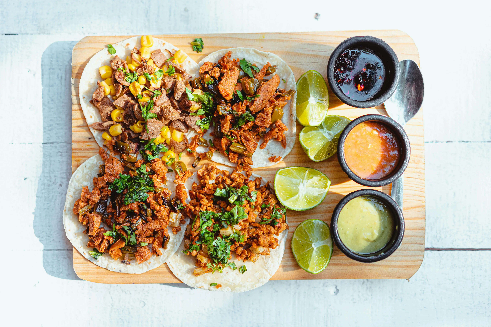

Welcome to the Online Recipe Repository
Discover, share, and save recipes from around the world.
Featured Recipes

Spaghetti Carbonara
A classic Italian pasta dish made with eggs, cheese, pancetta, and pepper.
View Recipe

Beef Tacos
Beef tacos are a classic Mexican dish featuring seasoned ground beef in crispy or soft tortillas, topped with fresh lettuce, tomatoes, and cheese, offering a savory and satisfying flavor experience.
View Recipe